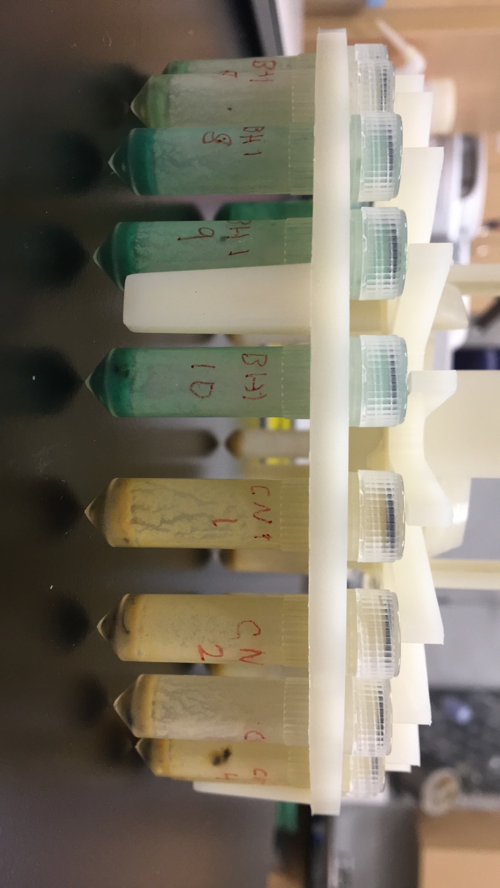

Age Cohort Analysis
Abbreviated methods
Sampling design
Honey bee workers complete specific tasks based on the age of the worker. Beekeepers often provide pollen supplement patties (PSPs) to provide nutrition during periods of pollen dearth. In this experiment, we were interested in whether nurse bees (that normally handle pollen) interact with PSPs or whether workers of other ages do. This experiment was conducted by Emily Noordyke for her master's work, advised by James D. Ellis.
To answer the question, bees were marked with non-toxic paint at eclosion. Two response variables were collected. In the first, proportion of bees with marked dye in guts, 20 bees per day were dissected and two observers identified whether dye was present in the sample. Only samples in which the two observers agreed were included in our statistical analysis. In the second, hives were opened daily and the number of marked bees standing on or interacting with PSPs was recorded. There were 4 treatments, (1) six colonies received a dyed PSP, (2) three colonies received undyed PSP (negative control), (3) three colonies received fondant mixed with dye (positive control), and (4) three colonies received model clay mixed with dye (consumption control).
Data analysis
Model selection
We constructed multiple generalized linear mixed effects models (GLMMs) in R. We then utilized Akaike's Information Criterion (AICc) (Akaike 1998; Grueber et al. 2011; Symonds and Moussalli 2011) to perform model selection and evaluate candiate models for each response variable. We considered models with smaller AiCc values and fewer predictor variables to be more parsimonious (Burnham and Anderson 2004). Using the most parsimonious model for each experiment, we calculated estimated marginal means (EMMs) and 95% confidence intervals of the response variables across worker age.
Environmental covariates
Weather data was collected from the University of Florida IFAS Florida Automated Weather Network (FAWN). Hourly measurements were averaged for each day of the experiment. We selected temperature at 60 cm (C), rainfall (cm), radiation (W/m^2), and humidity (%). We evaluated the effect of the environmental variables on each response variable in our system by visually assessing a plot of each unscaled environmental variable against the residuals of a GLMM containing all components of the corresponding full model, minus the environmental variable being evaluated.
Dye presence in bee guts
To examine dye presence in bee guts across worker age, we constructed models with a binomial distribution (1 = dye present, 0 = dye absent) and dye presence as the response variable. We selected worker age as linear and quadratic fixed effect predictor variables in our full model. We included the quadratic term based on our prediction that dye presence would peak at days five to ten. Additionally, we included the four environmental variables of interest as fixed effect covariates. We summarized the average value of each variable for the 23 hours preceding sampling (12:00 day n-1 – 11:00 day n). To account for time-dependent colony effects, we adopted a colony random effect with a first-order autoregressive (AR1) correlation structure. An AR1 correlation structure accounts for higher correlation in time points closer together (Shan et al. 2020). From our full model, we created subsequent models with all possible combinations of environmental covariates (Symonds and Moussalli 2011) and a variety of null models with (1) a colony random effect without AR1 correlation structure, (2) only weather variables, (3) no quadratic age fixed effect predictor variable, and (4) no predictor variables (response ~ 1). All 20 models were constructed with glmmTMB::glmmTMB (Brooks et al. 2017) and underwent model selection with AICc (Table 1). We initially examined all models within ∆i < 6 (Richards 2005). However, 15 of our 20 models were within ∆i < 6 and our goal of model selection was not met. Thus, we applied a more restrictive criteria of ∆i < 2 to consider and averaged our top models (Symonds and Moussalli 2011).
{kind=link}
Figure 1: Guts of dyed bees (left) compared to undyed bee guts (right).
Observations of marked bees on PSPs
To examine the presence of marked bees on PSPs across worker age, we constructed models with a negative binomial or Poisson distribution (Table 2) and counts of marked workers on PSPs as our response variable. We combined observations from the AP23 dyed and undyed (negative control) treatment groups, as we hypothesized that the presence of dye would not affect the number of marked bees contacting PSPs. Additionally, any differences between colonies were accounted for in a colony random effect with an AR1 correlation structure. We utilized an offset as a fixed effect to account for the changing total population of marked bees in each colony, due to background mortality and the removal of marked bees each day for the dye presence in bee guts experiment (Reitan and Nielsen 2016). The offset was employed as the log(total number of bees in each colony), which predicts the outcome variable as the rate of log(number of bees on PSPs) per total number of bees in the colony (Hutchinson and Holtman 2005). The total number of bees in each colony was calculated using the following formula: [number of bees at the start of the day (800 for day 1) – number of bees removed (20 bees per day, unless less than 20 bees were available) – background mortality of the number of bees left after removal each day]. The background mortality was calculated as the median rate of 3.7% (ESFA 2020), unless total bee counts were reduced below zero, in which case we reduced the background mortality rate by 0.1% until total bees were above zero at the end of the sampling period.
We included the four environmental variables of interest as fixed effect covariates in our full model to examine potential effects of environmental conditions on worker interaction with PSPs. We summarized the average value of each covariate for the period of sunrise to average observation time (7:00 – 11:00). From our full model, we created subsequent candidate models with all possible combinations of environmental covariates (Symonds and Moussalli 2011) and a variety of null models with (1) a colony random effect without AR1 correlation structure, (2) only weather variables, (3) no quadratic age fixed effect predictor variable, (4) no predictor variables (response ~ 1), and (5) the offset fixed effect removed. All 21 models were constructed with glmmTMB::glmmTMB (Brooks et al. 2017) and underwent model selection with AICc (Table 2). We averaged all models within ∆i < 6 (Richards 2005).

Figure 2: Honey bees consuming blue dyed patties in colony.
Results
Dye presence in bee guts
References
Smitley, D., Hotchkiss, E., Buckley, K., Piombiono, M., Lewis, P., & Studyvin, J. (2022). Gradual Decline of Japanese Beetle (Coleoptera: Scarabaeidae) Populations in Michigan Follows Establishment of Ovavesicula popilliae (Microsporidia). Journal of Economic Entomology, 115(5), 1432-1441.
Cantwell, G. E. (1970). Standard methods for counting Nosema spores. Amer Bee J.